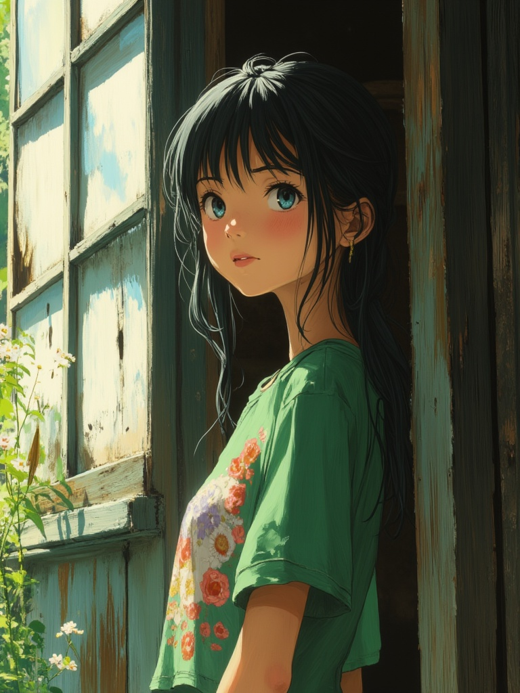
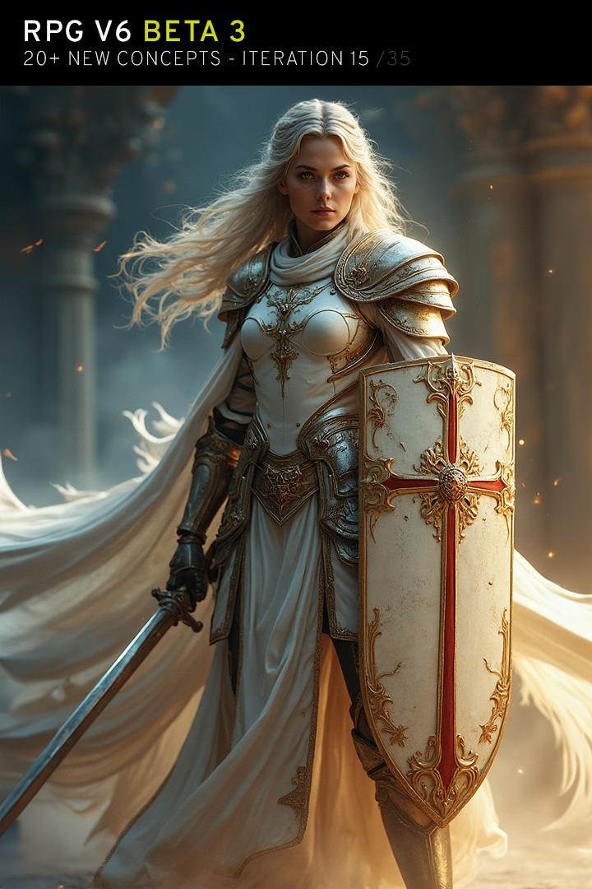
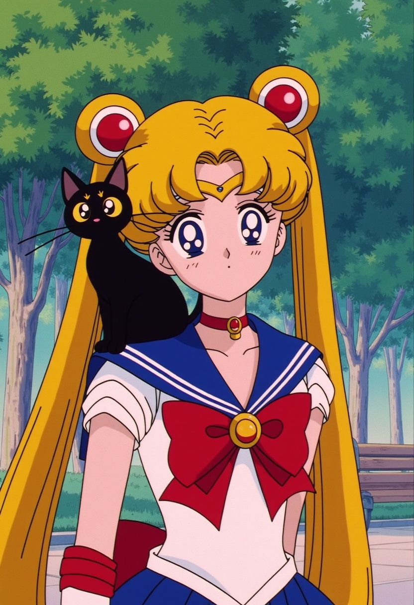
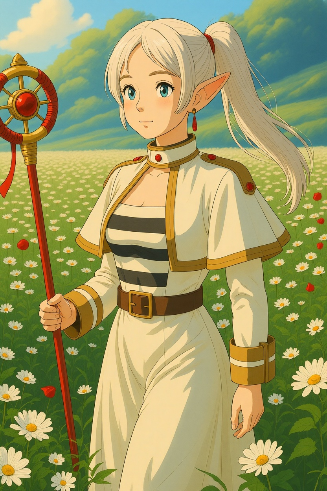
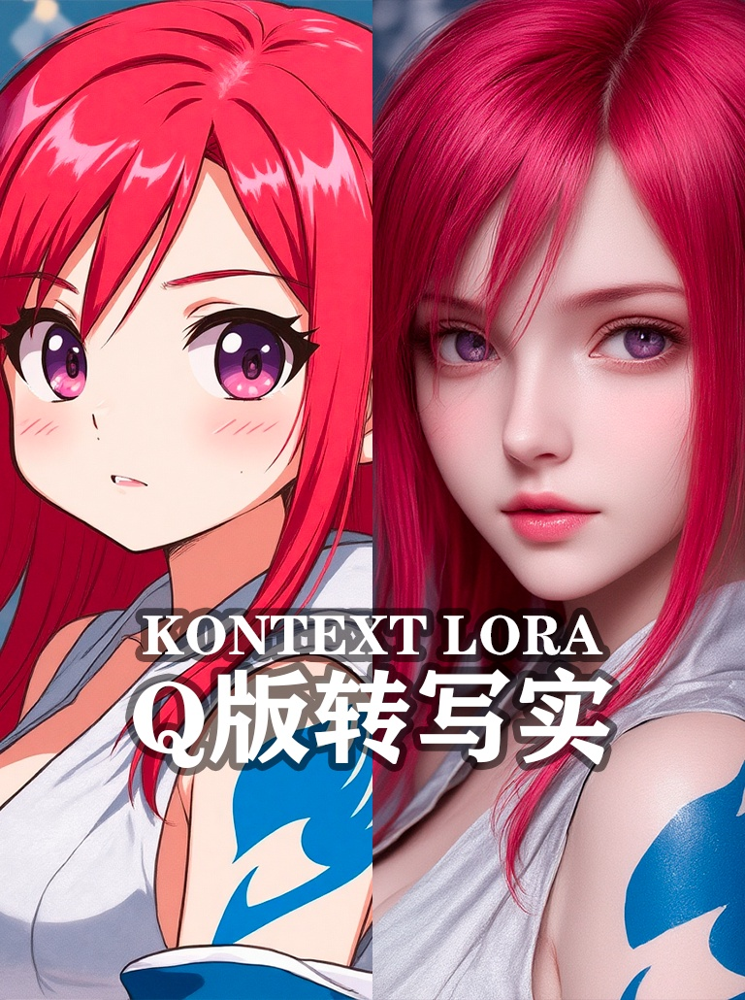
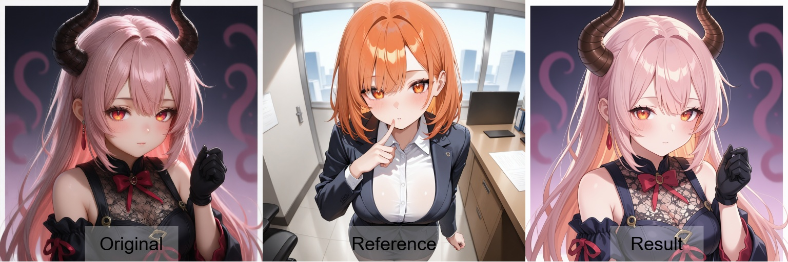
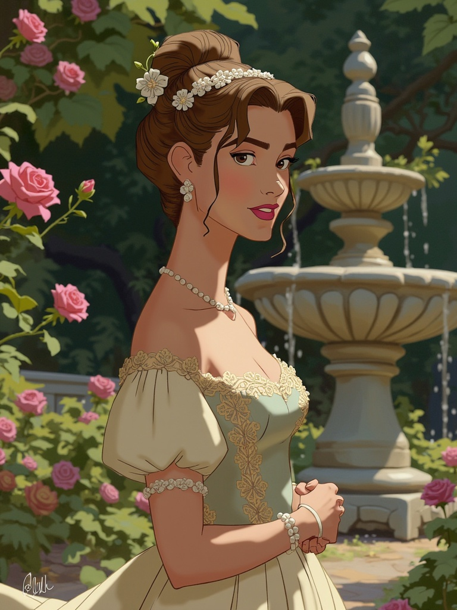
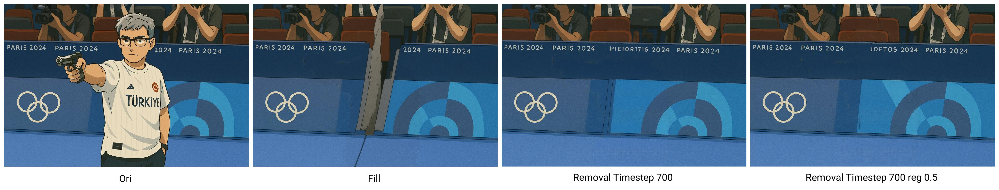

Flux 対応 おすすめLoRA一覧
対応モデルごとに分類されたLoRA一覧です。各カテゴリーを選択してください。全 985 ファイル。
loras (1)
Flux (168)
Illustrious (196)
Pony (104)
SD1.5 (264)
SDXL (23)
Unknown (124)
WanVideo (106)
Flux (68 items on this page / Total 168 items)
Flux
全般
niji_flux
「niji_flux」に特化した追加学習モデルです。Stable DiffusionでのAI画像生成にLoRAを導入し、特定要素の再現性を劇的に向上。効率的かつ高品質なビジュアルを求める全てのAI絵師必見のモデルです。
Size: 171,969,400 bytes
Flux
全般
Nurse_Uniform_Flux-000002
「Nurse_Uniform_Flux-000002」に特化した追加学習モデルです。Stable DiffusionでのAI画像生成にLoRAを導入し、特定要素の再現性を劇的に向上。効率的かつ高品質なビジュアルを求める全てのAI絵師必見のモデルです。
Size: 19,264,592 bytes
Flux
全般
nwsj_flux0924
「nwsj_flux0924」に特化した追加学習モデルです。Stable DiffusionでのAI画像生成にLoRAを導入し、特定要素の再現性を劇的に向上。効率的かつ高品質なビジュアルを求める全てのAI絵師必見のモデルです。
Size: 306,432,664 bytes

Flux
全般
obE4BABAE69687E7B289E5BD.cbPp
「obE4BABAE69687E7B289E5BD.cbPp」に特化した追加学習モデルです。Stable DiffusionでのAI画像生成にLoRAを導入し、特定要素の再現性を劇的に向上。効率的かつ高品質なビジュアルを求める全てのAI絵師必見のモデルです。
Size: 19,359,440 bytes
Flux
全般
obE58D8AE58699E5AE9EE88296E583.IwJt
「obE58D8AE58699E5AE9EE88296E583.IwJt」に特化した追加学習モデルです。Stable DiffusionでのAI画像生成にLoRAを導入し、特定要素の再現性を劇的に向上。効率的かつ高品質なビジュアルを求める全てのAI絵師必見のモデルです。
Size: 306,478,512 bytes
Flux
全般
obE68B8DE7AB8BE5BE97E4BABAE583.nzuU
「obE68B8DE7AB8BE5BE97E4BABAE583.nzuU」に特化した追加学習モデルです。Stable DiffusionでのAI画像生成にLoRAを導入し、特定要素の再現性を劇的に向上。効率的かつ高品質なビジュアルを求める全てのAI絵師必見のモデルです。
Size: 306,483,536 bytes

Flux
全般
Old Fashioned Celluloid_FLUX
「Old Fashioned Celluloid_FLUX」に特化した追加学習モデルです。Stable DiffusionでのAI画像生成にLoRAを導入し、特定要素の再現性を劇的に向上。効率的かつ高品質なビジュアルを求める全てのAI絵師必見のモデルです。
Size: 79,379,328 bytes

Flux
全般
p41nt4n1m3-style-fg-flux-lora
「p41nt4n1m3-style-fg-flux-lora」に特化した追加学習モデルです。Stable DiffusionでのAI画像生成にLoRAを導入し、特定要素の再現性を劇的に向上。効率的かつ高品質なビジュアルを求める全てのAI絵師必見のモデルです。
Size: 18,209,252 bytes
Flux
全般
pami_flux_v1-5000
「pami_flux_v1-5000」に特化した追加学習モデルです。Stable DiffusionでのAI画像生成にLoRAを導入し、特定要素の再現性を劇的に向上。効率的かつ高品質なビジュアルを求める全てのAI絵師必見のモデルです。
Size: 179,594,584 bytes
Flux
全般
PillowMasturbationFlux
「PillowMasturbationFlux」に特化した追加学習モデルです。Stable DiffusionでのAI画像生成にLoRAを導入し、特定要素の再現性を劇的に向上。効率的かつ高品質なビジュアルを求める全てのAI絵師必見のモデルです。
Size: 38,422,568 bytes

Flux
全般
PinkieMechaLuxFLUX
「PinkieMechaLuxFLUX」に特化した追加学習モデルです。Stable DiffusionでのAI画像生成にLoRAを導入し、特定要素の再現性を劇的に向上。効率的かつ高品質なビジュアルを求める全てのAI絵師必見のモデルです。
Size: 57,548,080 bytes

Flux
全般
PinkieSoftcoreAnimeFLUX
「PinkieSoftcoreAnimeFLUX」に特化した追加学習モデルです。Stable DiffusionでのAI画像生成にLoRAを導入し、特定要素の再現性を劇的に向上。効率的かつ高品質なビジュアルを求める全てのAI絵師必見のモデルです。
Size: 76,691,928 bytes
Flux
全般
Pointing_Gun_at_Viewer
「Pointing_Gun_at_Viewer」に特化した追加学習モデルです。Stable DiffusionでのAI画像生成にLoRAを導入し、特定要素の再現性を劇的に向上。効率的かつ高品質なビジュアルを求める全てのAI絵師必見のモデルです。
Size: 19,260,784 bytes
Flux
全般
pokemon
「pokemon」に特化した追加学習モデルです。Stable DiffusionでのAI画像生成にLoRAを導入し、特定要素の再現性を劇的に向上。効率的かつ高品質なビジュアルを求める全てのAI絵師必見のモデルです。
Size: 171,969,392 bytes
Flux
全般
ps2-style
「ps2-style」に特化した追加学習モデルです。Stable DiffusionでのAI画像生成にLoRAを導入し、特定要素の再現性を劇的に向上。効率的かつ高品質なビジュアルを求める全てのAI絵師必見のモデルです。
Size: 39,772,440 bytes
Flux
全般
PulldownFluxV1
「PulldownFluxV1」に特化した追加学習モデルです。Stable DiffusionでのAI画像生成にLoRAを導入し、特定要素の再現性を劇的に向上。効率的かつ高品質なビジュアルを求める全てのAI絵師必見のモデルです。
Size: 38,426,488 bytes
Flux
全般
PVCstyle
「PVCstyle」に特化した追加学習モデルです。Stable DiffusionでのAI画像生成にLoRAを導入し、特定要素の再現性を劇的に向上。効率的かつ高品質なビジュアルを求める全てのAI絵師必見のモデルです。
Size: 76,712,008 bytes
Flux
全般
Qipao-flux-Cos_epoch_10
「Qipao-flux-Cos_epoch_10」に特化した追加学習モデルです。Stable DiffusionでのAI画像生成にLoRAを導入し、特定要素の再現性を劇的に向上。効率的かつ高品質なビジュアルを求める全てのAI絵師必見のモデルです。
Size: 19,293,424 bytes
Flux
全般
range_murata_flux_lora_v1_000003000
「range_murata_flux_lora_v1_000003000」に特化した追加学習モデルです。Stable DiffusionでのAI画像生成にLoRAを導入し、特定要素の再現性を劇的に向上。効率的かつ高品質なビジュアルを求める全てのAI絵師必見のモデルです。
Size: 171,969,432 bytes
Flux
全般
rca_style_v1.1
「rca_style_v1.1」に特化した追加学習モデルです。Stable DiffusionでのAI画像生成にLoRAを導入し、特定要素の再現性を劇的に向上。効率的かつ高品質なビジュアルを求める全てのAI絵師必見のモデルです。
Size: 171,969,488 bytes

Flux
全般
RealisticAnimeFlux_v1
「RealisticAnimeFlux_v1」に特化した追加学習モデルです。Stable DiffusionでのAI画像生成にLoRAを導入し、特定要素の再現性を劇的に向上。効率的かつ高品質なビジュアルを求める全てのAI絵師必見のモデルです。
Size: 38,434,152 bytes

Flux
全般
rei-eva
「rei-eva」に特化した追加学習モデルです。Stable DiffusionでのAI画像生成にLoRAを導入し、特定要素の再現性を劇的に向上。効率的かつ高品質なビジュアルを求める全てのAI絵師必見のモデルです。
Size: 39,769,024 bytes
Flux
全般
remilia_3000
「remilia_3000」に特化した追加学習モデルです。Stable DiffusionでのAI画像生成にLoRAを導入し、特定要素の再現性を劇的に向上。効率的かつ高品質なビジュアルを求める全てのAI絵師必見のモデルです。
Size: 359,102,760 bytes
Flux
全般
Retro_Anime
「Retro_Anime」に特化した追加学習モデルです。Stable DiffusionでのAI画像生成にLoRAを導入し、特定要素の再現性を劇的に向上。効率的かつ高品質なビジュアルを求める全てのAI絵師必見のモデルです。
Size: 19,338,912 bytes
Flux
全般
RM_AnimeNiji_v0.3
「RM_AnimeNiji_v0.3」に特化した追加学習モデルです。Stable DiffusionでのAI画像生成にLoRAを導入し、特定要素の再現性を劇的に向上。効率的かつ高品質なビジュアルを求める全てのAI絵師必見のモデルです。
Size: 106,383,164 bytes

Flux
全般
RPGv6-itr15
「RPGv6-itr15」に特化した追加学習モデルです。Stable DiffusionでのAI画像生成にLoRAを導入し、特定要素の再現性を劇的に向上。効率的かつ高品質なビジュアルを求める全てのAI絵師必見のモデルです。
Size: 179,378,584 bytes

Flux
全般
Sadamoto Yoshiyuki_FLUX
「Sadamoto Yoshiyuki_FLUX」に特化した追加学習モデルです。Stable DiffusionでのAI画像生成にLoRAを導入し、特定要素の再現性を劇的に向上。効率的かつ高品質なビジュアルを求める全てのAI絵師必見のモデルです。
Size: 79,392,272 bytes

Flux
全般
Sailor_Moon_Flux
「Sailor_Moon_Flux」に特化した追加学習モデルです。Stable DiffusionでのAI画像生成にLoRAを導入し、特定要素の再現性を劇的に向上。効率的かつ高品質なビジュアルを求める全てのAI絵師必見のモデルです。
Size: 19,257,328 bytes
Flux
全般
Shiny_skin_FLUX
「Shiny_skin_FLUX」に特化した追加学習モデルです。Stable DiffusionでのAI画像生成にLoRAを導入し、特定要素の再現性を劇的に向上。効率的かつ高品質なビジュアルを求める全てのAI絵師必見のモデルです。
Size: 19,269,480 bytes
Flux
全般
Simple_Illustration_Style-000004
「Simple_Illustration_Style-000004」に特化した追加学習モデルです。Stable DiffusionでのAI画像生成にLoRAを導入し、特定要素の再現性を劇的に向上。効率的かつ高品質なビジュアルを求める全てのAI絵師必見のモデルです。
Size: 19,257,128 bytes

Flux
全般
slrmn_flux_EliPot
「slrmn_flux_EliPot」に特化した追加学習モデルです。Stable DiffusionでのAI画像生成にLoRAを導入し、特定要素の再現性を劇的に向上。効率的かつ高品質なビジュアルを求める全てのAI絵師必見のモデルです。
Size: 19,272,792 bytes
Flux
全般
SplitColorHair
「SplitColorHair」に特化した追加学習モデルです。Stable DiffusionでのAI画像生成にLoRAを導入し、特定要素の再現性を劇的に向上。効率的かつ高品質なビジュアルを求める全てのAI絵師必見のモデルです。
Size: 143,708,912 bytes
Flux
全般
sref12506xx74484711_flux_v1_000001500
「sref12506xx74484711_flux_v1_000001500」に特化した追加学習モデルです。Stable DiffusionでのAI画像生成にLoRAを導入し、特定要素の再現性を劇的に向上。効率的かつ高品質なビジュアルを求める全てのAI絵師必見のモデルです。
Size: 171,969,440 bytes
Flux
全般
Street_Fighter_-_Chun-Li
「Street_Fighter_-_Chun-Li」に特化した追加学習モデルです。Stable DiffusionでのAI画像生成にLoRAを導入し、特定要素の再現性を劇的に向上。効率的かつ高品質なビジュアルを求める全てのAI絵師必見のモデルです。
Size: 38,462,800 bytes

Flux
全般
Such an Asian Skin Beauty_v2.0
「Such an Asian Skin Beauty_v2.0」に特化した追加学習モデルです。Stable DiffusionでのAI画像生成にLoRAを導入し、特定要素の再現性を劇的に向上。効率的かつ高品質なビジュアルを求める全てのAI絵師必見のモデルです。
Size: 171,969,509 bytes

Flux
全般
SuchHorriGirl v1.5_000001250
「SuchHorriGirl v1.5_000001250」に特化した追加学習モデルです。Stable DiffusionでのAI画像生成にLoRAを導入し、特定要素の再現性を劇的に向上。効率的かつ高品質なビジュアルを求める全てのAI絵師必見のモデルです。
Size: 171,969,505 bytes

Flux
全般
Takemi Tae v2_epoch_15
「Takemi Tae v2_epoch_15」に特化した追加学習モデルです。Stable DiffusionでのAI画像生成にLoRAを導入し、特定要素の再現性を劇的に向上。効率的かつ高品質なビジュアルを求める全てのAI絵師必見のモデルです。
Size: 38,407,736 bytes
Flux
全般
Test_flux_train
「Test_flux_train」に特化した追加学習モデルです。Stable DiffusionでのAI画像生成にLoRAを導入し、特定要素の再現性を劇的に向上。効率的かつ高品質なビジュアルを求める全てのAI絵師必見のモデルです。
Size: 76,708,904 bytes
Flux
全般
Tifa-Lockhart-Final-Fantasy-Remake-Intergrade-Flux
「Tifa-Lockhart-Final-Fantasy-Remake-Intergrade-Flux」に特化した追加学習モデルです。Stable DiffusionでのAI画像生成にLoRAを導入し、特定要素の再現性を劇的に向上。効率的かつ高品質なビジュアルを求める全てのAI絵師必見のモデルです。
Size: 306,429,184 bytes
Flux
全般
Train_Hoshino_AI
「Train_Hoshino_AI」に特化した追加学習モデルです。Stable DiffusionでのAI画像生成にLoRAを導入し、特定要素の再現性を劇的に向上。効率的かつ高品質なビジュアルを求める全てのAI絵師必見のモデルです。
Size: 153,284,728 bytes
Flux
全般
Transhuman_Flux
「Transhuman_Flux」に特化した追加学習モデルです。Stable DiffusionでのAI画像生成にLoRAを導入し、特定要素の再現性を劇的に向上。効率的かつ高品質なビジュアルを求める全てのAI絵師必見のモデルです。
Size: 306,426,712 bytes

Flux
全般
Tsukasa Hojo_FLUX
「Tsukasa Hojo_FLUX」に特化した追加学習モデルです。Stable DiffusionでのAI画像生成にLoRAを導入し、特定要素の再現性を劇的に向上。効率的かつ高品質なビジュアルを求める全てのAI絵師必見のモデルです。
Size: 79,380,984 bytes

Flux
全般
ts_f1d_civchan_20250331_2200
「ts_f1d_civchan_20250331_2200」に特化した追加学習モデルです。Stable DiffusionでのAI画像生成にLoRAを導入し、特定要素の再現性を劇的に向上。効率的かつ高品質なビジュアルを求める全てのAI絵師必見のモデルです。
Size: 39,759,696 bytes

Flux
全般
Unfazed Flat Colored flux v1.0
「Unfazed Flat Colored flux v1.0」に特化した追加学習モデルです。Stable DiffusionでのAI画像生成にLoRAを導入し、特定要素の再現性を劇的に向上。効率的かつ高品質なビジュアルを求める全てのAI絵師必見のモデルです。
Size: 612,748,592 bytes
Flux
全般
urushihara3_resize
「urushihara3_resize」に特化した追加学習モデルです。Stable DiffusionでのAI画像生成にLoRAを導入し、特定要素の再現性を劇的に向上。効率的かつ高品質なビジュアルを求める全てのAI絵師必見のモデルです。
Size: 20,960,912 bytes
Flux
全般
Wariza_Sitting_Flux_-_V4
「Wariza_Sitting_Flux_-_V4」に特化した追加学習モデルです。Stable DiffusionでのAI画像生成にLoRAを導入し、特定要素の再現性を劇的に向上。効率的かつ高品質なビジュアルを求める全てのAI絵師必見のモデルです。
Size: 153,311,696 bytes
Flux
全般
WetWetWet_flux_lora_v1_000005500
「WetWetWet_flux_lora_v1_000005500」に特化した追加学習モデルです。Stable DiffusionでのAI画像生成にLoRAを導入し、特定要素の再現性を劇的に向上。効率的かつ高品質なビジュアルを求める全てのAI絵師必見のモデルです。
Size: 257,887,496 bytes
Flux
全般
xjie-gufeng
「xjie-gufeng」に特化した追加学習モデルです。Stable DiffusionでのAI画像生成にLoRAを導入し、特定要素の再現性を劇的に向上。効率的かつ高品質なビジュアルを求める全てのAI絵師必見のモデルです。
Size: 306,426,864 bytes

Flux
全般
Yabuki Kentarou_FLUX
「Yabuki Kentarou_FLUX」に特化した追加学習モデルです。Stable DiffusionでのAI画像生成にLoRAを導入し、特定要素の再現性を劇的に向上。効率的かつ高品質なビジュアルを求める全てのAI絵師必見のモデルです。
Size: 79,395,216 bytes
Flux
全般
yoneyama_v4
「yoneyama_v4」に特化した追加学習モデルです。Stable DiffusionでのAI画像生成にLoRAを導入し、特定要素の再現性を劇的に向上。効率的かつ高品質なビジュアルを求める全てのAI絵師必見のモデルです。
Size: 1,613,892,136 bytes

Flux
全般
zyd232_ChineseGirl_Flux1-Krea-dev_v1_2
「zyd232_ChineseGirl_Flux1-Krea-dev_v1_2」に特化した追加学習モデルです。Stable DiffusionでのAI画像生成にLoRAを導入し、特定要素の再現性を劇的に向上。効率的かつ高品質なビジュアルを求める全てのAI絵師必見のモデルです。
Size: 9,685,520 bytes
Flux
全般
[flux]wlop-nai3-lora
「[flux]wlop-nai3-lora」に特化した追加学習モデルです。Stable DiffusionでのAI画像生成にLoRAを導入し、特定要素の再現性を劇的に向上。効率的かつ高品質なビジュアルを求める全てのAI絵師必見のモデルです。
Size: 306,470,944 bytes
Flux
全般
手办Flux
「手办Flux」に特化した追加学習モデルです。Stable DiffusionでのAI画像生成にLoRAを導入し、特定要素の再現性を劇的に向上。効率的かつ高品質なビジュアルを求める全てのAI絵師必見のモデルです。
Size: 306,440,960 bytes

Flux
全般
aldniki_reality_transform_v01
「aldniki_reality_transform_v01」に特化した追加学習モデルです。Stable DiffusionでのAI画像生成にLoRAを導入し、特定要素の再現性を劇的に向上。効率的かつ高品質なビジュアルを求める全てのAI絵師必見のモデルです。
Size: 306,793,968 bytes

Flux
全般
ghibliStyle_kontext_byJaneB
「ghibliStyle_kontext_byJaneB」に特化した追加学習モデルです。Stable DiffusionでのAI画像生成にLoRAを導入し、特定要素の再現性を劇的に向上。効率的かつ高品質なビジュアルを求める全てのAI絵師必見のモデルです。
Size: 343,806,408 bytes
Flux
全般
HXHY-RealisticKontextLoRA1.6
「HXHY-RealisticKontextLoRA1.6」に特化した追加学習モデルです。Stable DiffusionでのAI画像生成にLoRAを導入し、特定要素の再現性を劇的に向上。効率的かつ高品質なビジュアルを求める全てのAI絵師必見のモデルです。
Size: 171,969,320 bytes

Flux
全般
kontext-qtorealanime
「kontext-qtorealanime」に特化した追加学習モデルです。Stable DiffusionでのAI画像生成にLoRAを導入し、特定要素の再現性を劇的に向上。効率的かつ高品質なビジュアルを求める全てのAI絵師必見のモデルです。
Size: 343,806,496 bytes
Flux
全般
Makoto_Shinkai_style_v1
「Makoto_Shinkai_style_v1」に特化した追加学習モデルです。Stable DiffusionでのAI画像生成にLoRAを導入し、特定要素の再現性を劇的に向上。効率的かつ高品質なビジュアルを求める全てのAI絵師必見のモデルです。
Size: 171,970,352 bytes
Flux
全般
hinaFluxKreaAsianMix_v195
「hinaFluxKreaAsianMix_v195」に特化した追加学習モデルです。Stable DiffusionでのAI画像生成にLoRAを導入し、特定要素の再現性を劇的に向上。効率的かつ高品質なビジュアルを求める全てのAI絵師必見のモデルです。
Size: 153,267,744 bytes
Flux
全般
f2k_anything2real_a_patched
「f2k_anything2real_a_patched」に特化した追加学習モデルです。Stable DiffusionでのAI画像生成にLoRAを導入し、特定要素の再現性を劇的に向上。効率的かつ高品質なビジュアルを求める全てのAI絵師必見のモデルです。
Size: 285,246,040 bytes
Flux
全般
AniEdit9B_v2
「AniEdit9B_v2」に特化した追加学習モデルです。Stable DiffusionでのAI画像生成にLoRAを導入し、特定要素の再現性を劇的に向上。効率的かつ高品質なビジュアルを求める全てのAI絵師必見のモデルです。
Size: 994,079,944 bytes

Flux
全般
cifk9001
「cifk9001」に特化した追加学習モデルです。Stable DiffusionでのAI画像生成にLoRAを導入し、特定要素の再現性を劇的に向上。効率的かつ高品質なビジュアルを求める全てのAI絵師必見のモデルです。
Size: 165,717,144 bytes
Flux
全般
ghibli_style_klein9b
「ghibli_style_klein9b」に特化した追加学習モデルです。Stable DiffusionでのAI画像生成にLoRAを導入し、特定要素の再現性を劇的に向上。効率的かつ高品質なビジュアルを求める全てのAI絵師必見のモデルです。
Size: 82,866,768 bytes

Flux
全般
klein_slider_anime
「klein_slider_anime」に特化した追加学習モデルです。Stable DiffusionでのAI画像生成にLoRAを導入し、特定要素の再現性を劇的に向上。効率的かつ高品質なビジュアルを求める全てのAI絵師必見のモデルです。
Size: 20,738,136 bytes

Flux
全般
animation2k_v1
「animation2k_v1」に特化した追加学習モデルです。Stable DiffusionでのAI画像生成にLoRAを導入し、特定要素の再現性を劇的に向上。効率的かつ高品質なビジュアルを求める全てのAI絵師必見のモデルです。
Size: 171,969,352 bytes
Flux
全般
ArcaneFGTNR
「ArcaneFGTNR」に特化した追加学習モデルです。Stable DiffusionでのAI画像生成にLoRAを導入し、特定要素の再現性を劇的に向上。効率的かつ高品質なビジュアルを求める全てのAI絵師必見のモデルです。
Size: 89,745,224 bytes
Flux
全般
Eldritch_animation1.1
「Eldritch_animation1.1」に特化した追加学習モデルです。Stable DiffusionでのAI画像生成にLoRAを導入し、特定要素の再現性を劇的に向上。効率的かつ高品質なビジュアルを求める全てのAI絵師必見のモデルです。
Size: 172,424,584 bytes

Flux
全般
removal_timestep_alpha-2-1740
「removal_timestep_alpha-2-1740」に特化した追加学習モデルです。Stable DiffusionでのAI画像生成にLoRAを導入し、特定要素の再現性を劇的に向上。効率的かつ高品質なビジュアルを求める全てのAI絵師必見のモデルです。
Size: 89,746,016 bytes